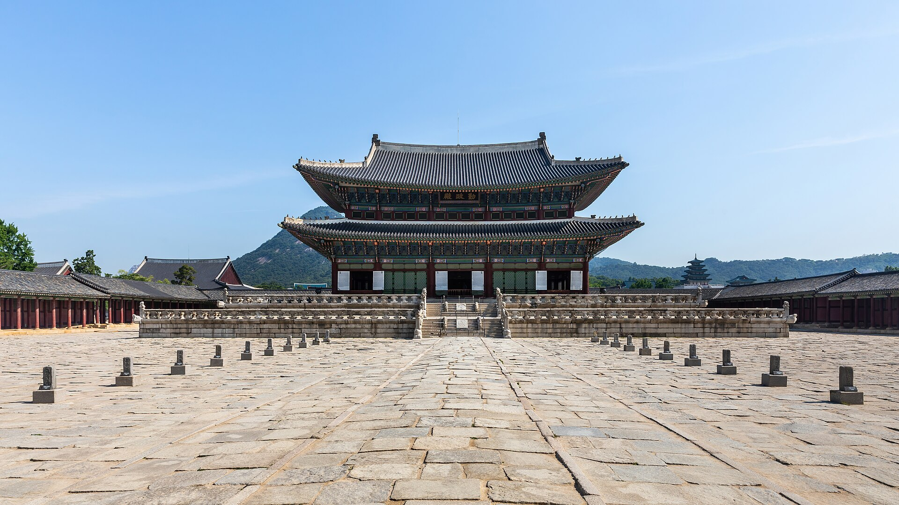

법궁의 위엄, 근정전(勤政殿)

근정전은 경복궁의 정전으로, 국가의 공식 행사가 거행되던 곳입니다.
연회의 장소, 경회루(慶會樓)

봄바람에 흩날리는 벚꽃과 어우러진 경회루는 경복궁의 백미입니다.
궁궐 소식
야간 관람 예매가 진행 중입니다.
주요 궁궐
- 창덕궁
- 창경궁
- 덕수궁
전통과 현대가 공존하는 조선의 법궁, 경복궁

근정전은 경복궁의 정전으로, 국가의 공식 행사가 거행되던 곳입니다.
봄바람에 흩날리는 벚꽃과 어우러진 경회루는 경복궁의 백미입니다.
야간 관람 예매가 진행 중입니다.